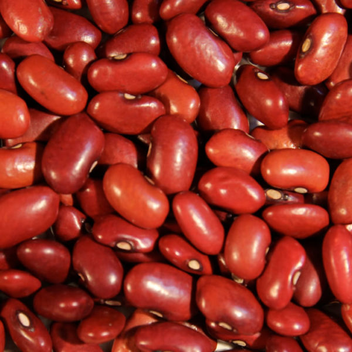
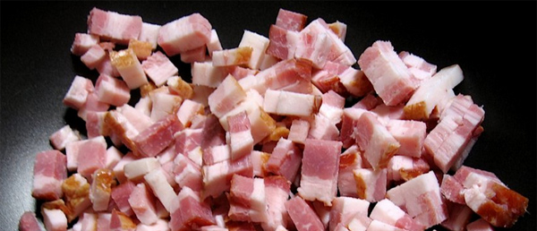
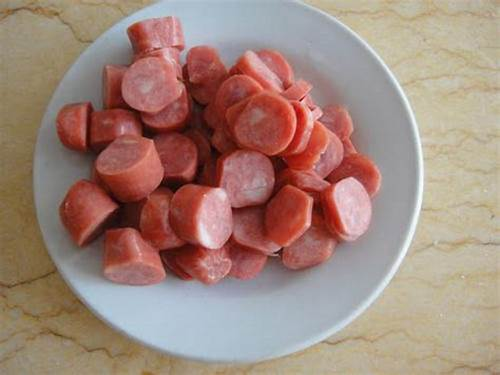
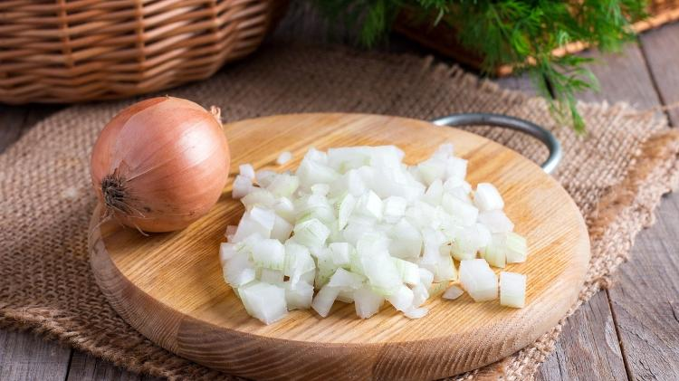
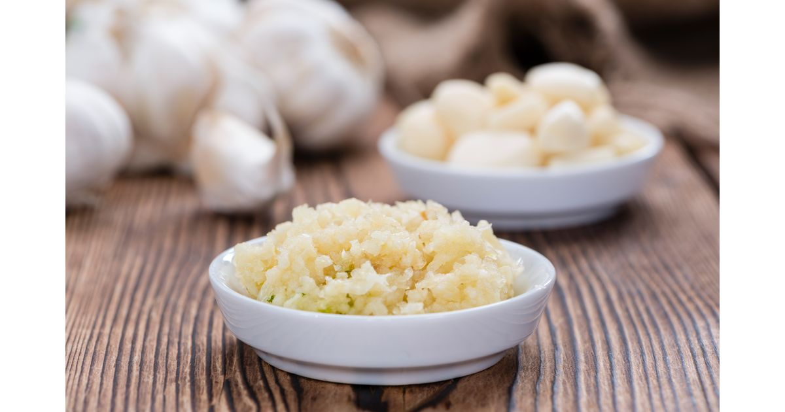
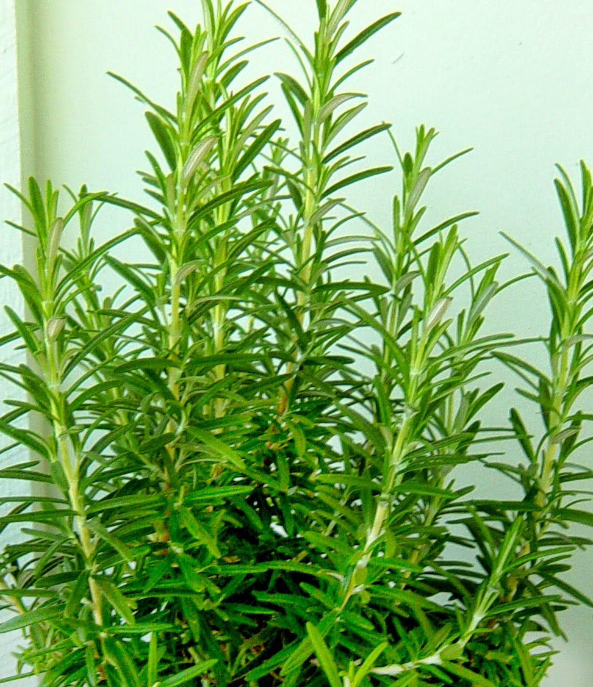
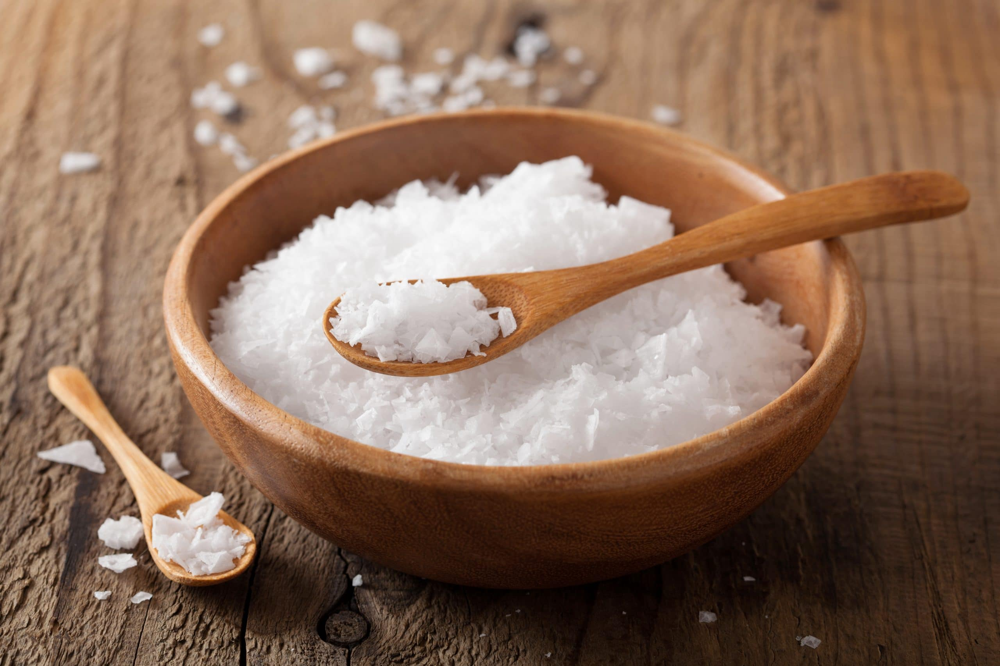
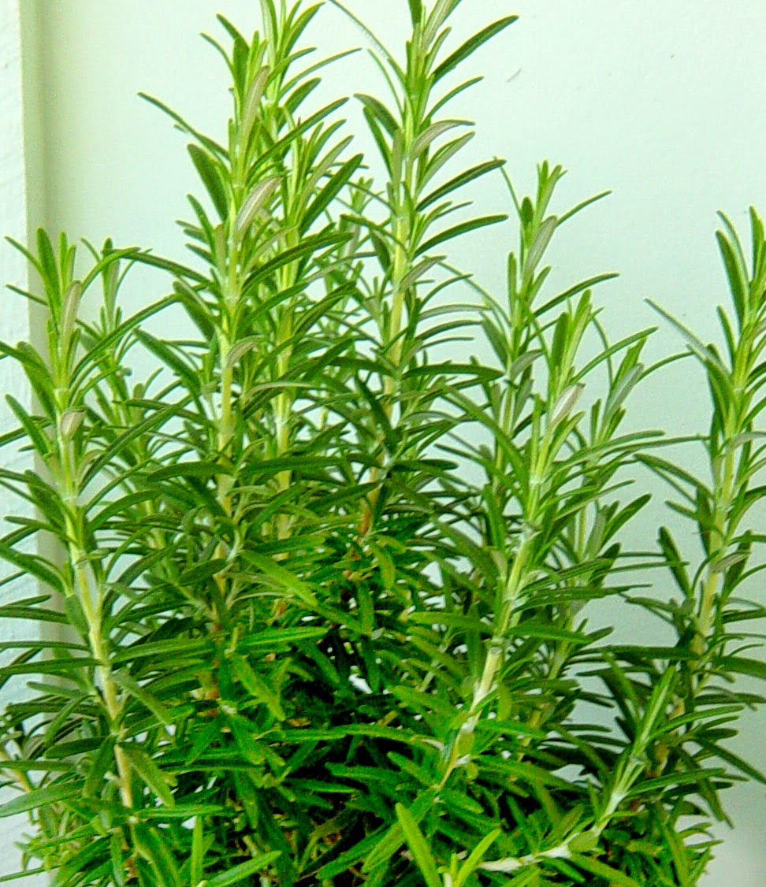
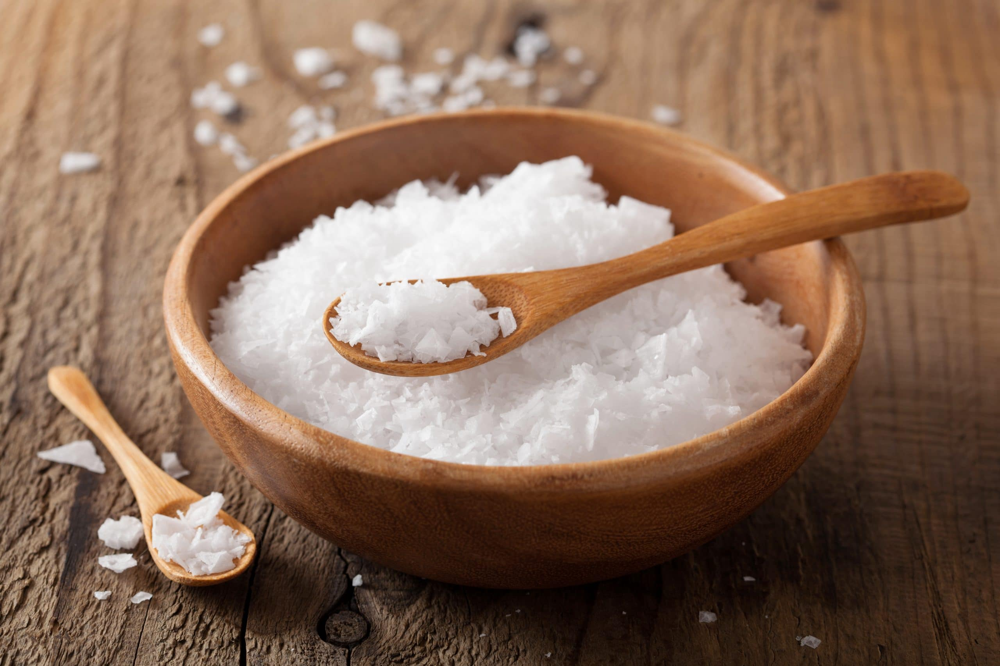

Receita feijão aroeira - Ingredientes
Receita do Raphael
Ingredientes:

- 500g - feijão vermelho
- 1,8L - água
- 150g - bacon
- 100g - calabresa
- 2un. - pimenta dedo de moça
- 2un. - cebola
- 1/2un. - cabeça alho
- alecrim
- sal
 

| INFORMAÇÃO NUTRICIONAL |
| Porção de 30g(1Colher dosadora) |
| Quantidade por porção |
%VD(*) |
| Valor energético |
118kcal = 493kJ |
6% |
| Carboidratos |
3,0g |
1% |
| Proteína |
25g |
50% |
| Gorduras Totais |
0,7g |
1% |
| Gorduras Saturadas |
0,3g |
1% |
| Gorduras Trans |
0g |
** |
| Fibra Alimentar |
0g |
0% |
| Sódio |
99mg |
4% |
topo da página